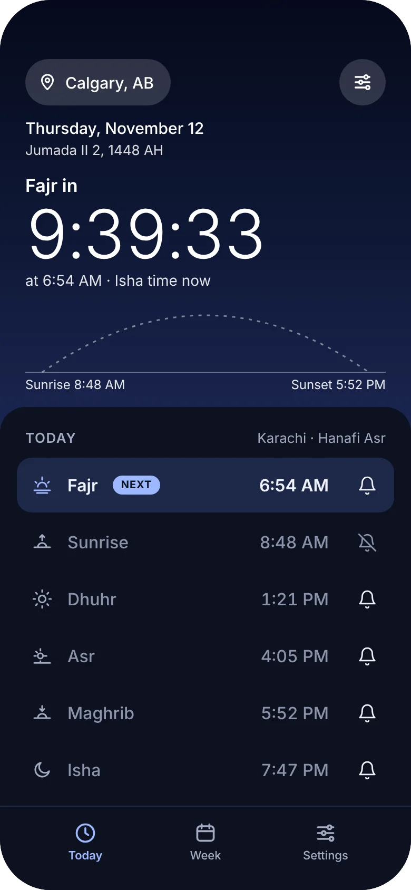
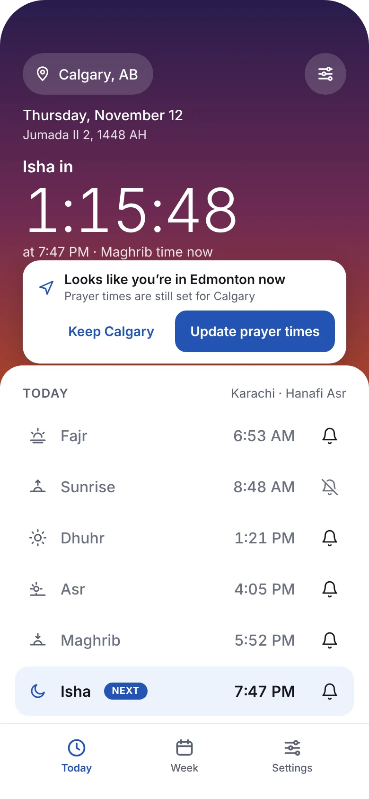
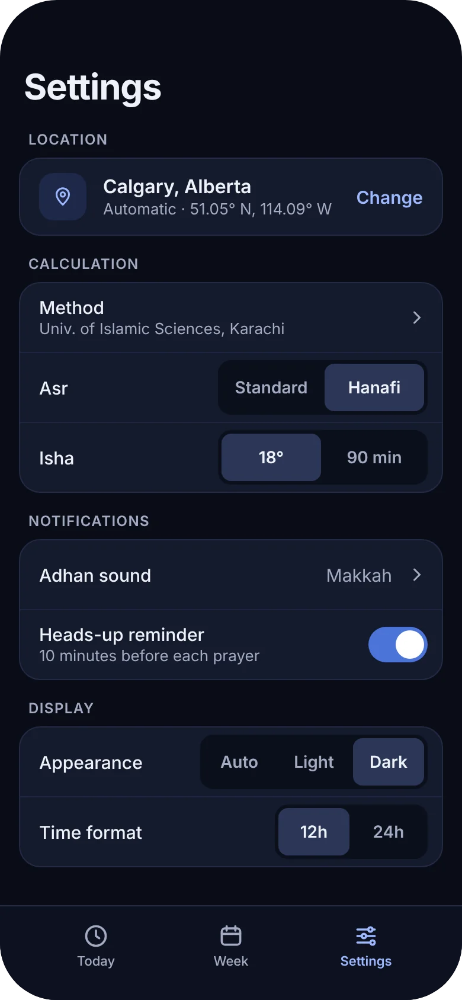
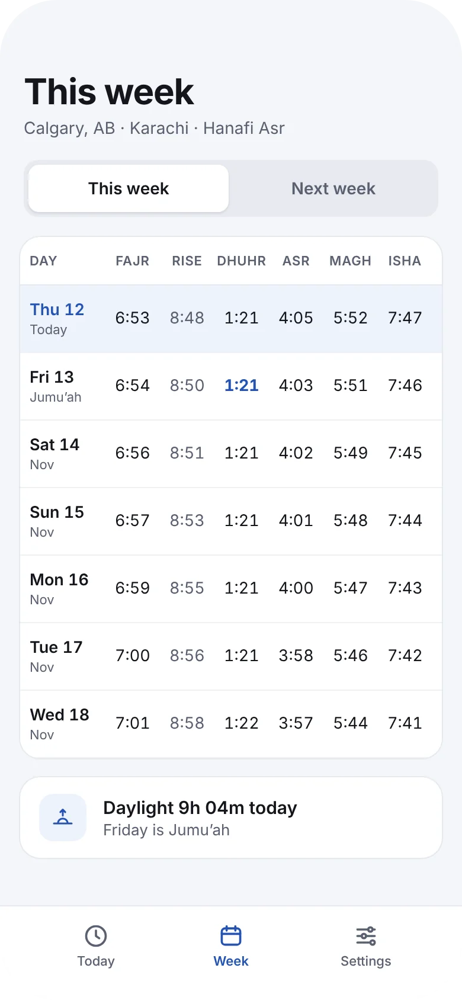
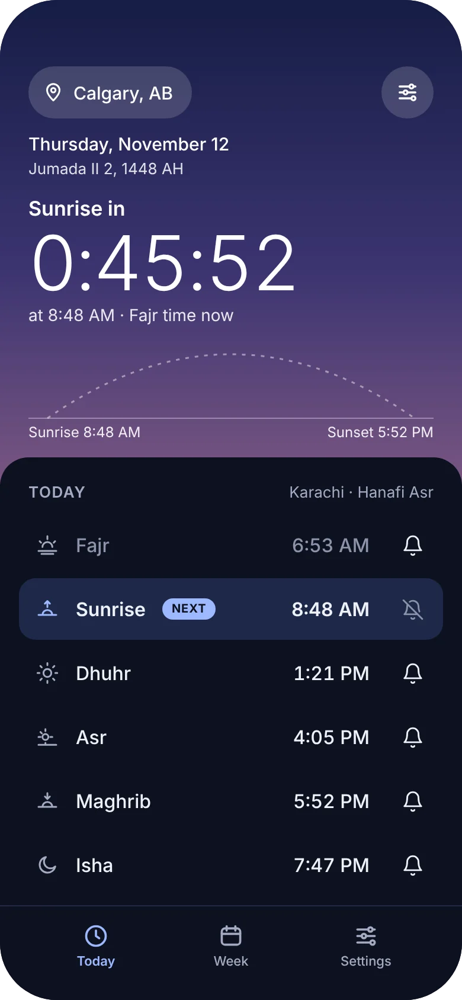
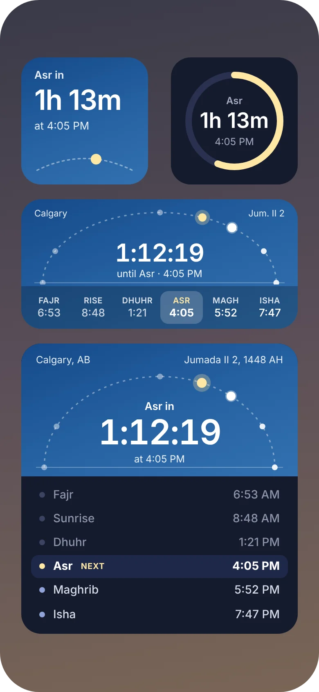
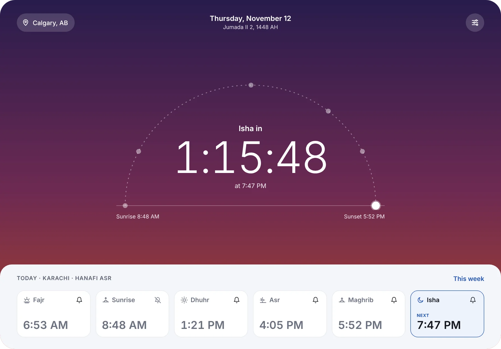
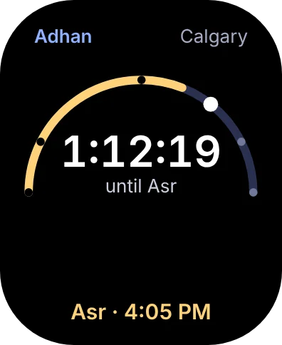
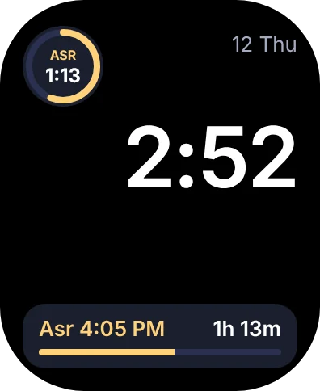

Built around the next prayer
Everything in Adhan Times starts from one question: how long until the next adhan?

A live countdown to every adhan
Open the app and the next prayer is the first thing you see, counting down to the second. Today’s six prayer times sit below, with the next one marked and passed ones softly dimmed.
- Hijri date beside the Gregorian date
- A bell on each prayer to turn its reminder on or off
- An optional heads-up reminder before each prayer

Accurate wherever you travel
Prayer times are calculated on your device for where you are. Arrive somewhere new and Adhan Times notices, then offers to update your times and reminders with one tap.
- Works without an account or sign-in
- Calculated on your device, so it works offline

The method your community follows
Choose from the major calculation methods, including University of Islamic Sciences Karachi, ISNA, Muslim World League, Egypt, Makkah and Tehran. Pick Standard or Hanafi for Asr, and the adhan sound you want to hear.

Plan the week ahead
See every prayer time for the next seven days in one table, with Fridays marked for Jumu’ah and how much daylight you gain or lose each day.
The sky follows your day
The screen takes on the colour of the hour, from the violet before Fajr to the deep blue of Isha, so a glance tells you where you are in the day.

The countdown, right on your Home Screen
Small, medium and large widgets show the time left until the next prayer over the sun’s path across the day. The larger sizes list all six prayers. Lock Screen widgets and a Live Activity keep the next adhan in view without unlocking your phone.

On your wrist, your iPad and your iPhone Duo



Apple Watch
A countdown, the full list of times and complications for your watch face.
iPad
A large countdown at the centre of the screen, with the day’s prayers below.
iPhone Duo
Fits the cover screen when folded and the full screen when open.
Questions
How does Adhan Times calculate prayer times?
Prayer times are calculated on your device from your location using standard astronomical formulas. You can choose the calculation method, including University of Islamic Sciences Karachi, ISNA, Muslim World League, Egypt, Makkah and Tehran, and pick Standard or Hanafi for Asr.
Do prayer times update when I travel?
Yes. When you open the app somewhere new, Adhan Times notices the change and offers to update your prayer times and reminders with one tap.
Will I hear the adhan at each prayer time?
Adhan Times schedules an adhan notification for each prayer. You can turn reminders on or off for each prayer and add a heads-up reminder before it.
Which devices does Adhan Times support?
Adhan Times runs on iPhone, iPhone Duo and iPad, with an Apple Watch app and complications, plus widgets for the Home Screen and Lock Screen.
Do I need an account?
No. Adhan Times works without an account or sign-in.
Know the time to the next prayer, always.
Adhan Times for iPhone, iPad and Apple Watch.